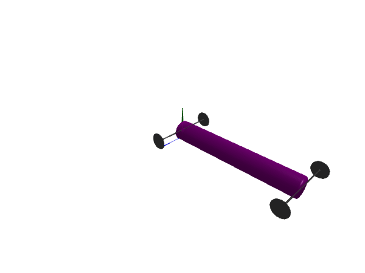

Wheels
When modeling wheels, there are several different assumptions that can be made, such as
- Is the wheel able to leave the ground or not?
- Can the wheel slip or does it roll perfectly?
The wheel-related components available are
RollingWheel: a wheel that can roll on the ground. It cannot slip and it cannot leave the ground.RollingWheelJoint: a lower-level component used inRollingWheelto model the kinematics of the wheel, without inertial or mass properties.RollingWheelSet: a set of two wheels connected by an axis. One of the wheels cannot slip, while the other one slips as required to allow the wheel set to turn (no differential is modeled). No wheel can leave the ground.RollingWheelSetJoint: A lower-level component used inRollingWheelSetto model the kinematics of the wheel set, without inertial or mass properties.RollingConstraintVerticalWheel: A low-level constraint that is used to enforce a perfectly rolling wheel that is always vertical, i.e., it can only roll forward and not fall down.
All wheel components are limited to rolling on the $xz$ plane, i.e., the gravity direction must be the default [0, -1, 0].
Rolling wheel
using Multibody
using ModelingToolkit
import ModelingToolkitStandardLibrary.Mechanical.Rotational
import ModelingToolkitStandardLibrary.Blocks
using Plots
using OrdinaryDiffEq
using LinearAlgebra
using JuliaSimCompiler
using Test
t = Multibody.t
D = Differential(t)
W(args...; kwargs...) = Multibody.world
@mtkmodel WheelInWorld begin
@components begin
world = W()
wheel = RollingWheel(
radius = 0.3,
m = 2,
I_axis = 0.06,
I_long = 0.12,
x0 = 0.2,
z0 = 0.2,
der_angles = [0, 5, 1],
)
end
end
@named worldwheel = WheelInWorld()
worldwheel = complete(worldwheel)
defs = Dict([
worldwheel.wheel.body.r_0[1] => 0.2;
worldwheel.wheel.body.r_0[2] => 0.3;
worldwheel.wheel.body.r_0[3] => 0.2;
])
ssys = structural_simplify(IRSystem(worldwheel))
prob = ODEProblem(ssys, defs, (0, 4))
sol = solve(prob, Tsit5())
@test SciMLBase.successful_retcode(sol)Test Passedimport GLMakie
Multibody.render(worldwheel, sol; filename = "worldwheel.gif")Wheel set
A RollingWheelSet is comprised out of two wheels mounted on a common axis through their axis of rotation.
@mtkmodel DrivingWheelSet begin
@components begin
sine1 = Blocks.Sine(frequency=1, amplitude=2)
sine2 = Blocks.Sine(frequency=1, amplitude=2, phase=pi/2)
torque1 = Rotational.Torque()
torque2 = Rotational.Torque()
wheels = RollingWheelSet(radius=0.1, m_wheel=0.5, I_axis=0.01, I_long=0.02, track=0.5, state_priority=100)
bar = FixedTranslation(r = [0.2, 0, 0])
body = Body(m=0.01, state_priority=1)
world = W()
end
@equations begin
connect(sine1.output, torque1.tau)
connect(sine2.output, torque2.tau)
connect(torque1.flange, wheels.axis1)
connect(torque2.flange, wheels.axis2)
connect(wheels.frame_middle, bar.frame_a)
connect(bar.frame_b, body.frame_a)
end
end
@named model = DrivingWheelSet()
model = complete(model)
ssys = structural_simplify(IRSystem(model))
# display(unknowns(ssys))
prob = ODEProblem(ssys, [
model.wheels.wheelSetJoint.prismatic1.s => 0.1
model.wheels.wheelSetJoint.prismatic2.s => 0.1
], (0, 3))
sol = solve(prob, Tsit5())
@test SciMLBase.successful_retcode(sol)Test Passedimport GLMakie
Multibody.render(model, sol; filename = "wheelset.gif")The RollingWheelSet includes constraints that prevent the wheels from leaving the ground and the connector frame_middle from rotating around the wheel axis. This means that if two wheel sets are connected to the same body, the system will be over constrained. To solve this, pass iscut = true to one of the wheel sets, like below:
wheel_mass = 15
I_axis=0.01
I_long=0.02
wheel_d = 2
wheel_radius = 0.25
tire_black = [0.1, 0.1, 0.1, 1]
@mtkmodel Car begin
@structural_parameters begin
l=4
end
@parameters begin
m=108
I=10
g=0
end
@components begin
world = W()
sine1 = Blocks.Sine(frequency=1, amplitude=150)
sine2 = Blocks.Sine(frequency=1, amplitude=150, phase=pi/6)
torque1 = Rotational.Torque()
torque2 = Rotational.Torque()
front_wheels = RollingWheelSet(radius=wheel_radius, m_wheel=wheel_mass, I_axis, I_long, track=wheel_d)
rear_wheels = RollingWheelSet(radius=wheel_radius, m_wheel=wheel_mass, I_axis, I_long, track=wheel_d, iscut=true)
steering_joint = Revolute(n = [0,1,0], axisflange=true, state_priority=100)
prefer_straight_ahead = Rotational.SpringDamper(d=10, c=10)
body = BodyShape(;m, r = [l, 0, 0], I_22 = I, radius=0.3)
end
@equations begin
connect(sine1.output, torque1.tau)
connect(sine2.output, torque2.tau)
connect(torque1.flange, front_wheels.axis1)
connect(torque2.flange, front_wheels.axis2)
connect(front_wheels.frame_middle, steering_joint.frame_a)
connect(steering_joint.frame_b, body.frame_a)
connect(rear_wheels.frame_middle, body.frame_b)
connect(prefer_straight_ahead.flange_a, steering_joint.axis)
connect(prefer_straight_ahead.flange_b, steering_joint.support)
end
end
@named model = Car()
model = complete(model)
ssys = structural_simplify(IRSystem(model))
prob = ODEProblem(ssys, [], (0, 6))
sol = solve(prob, Tsit5())
render(model, sol, framerate=30, filename="car.gif", x=6, z=6, y=5)